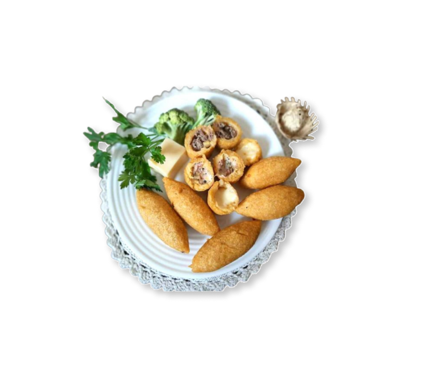

Bolinho Caipira
The bolinho caipira is a fried savory and originally stuffed with meat, pepperoni, sausage or even chicken, typical of country cuisine in Brazil, originally from the Paraíba Valley, in the interior of São Paulo